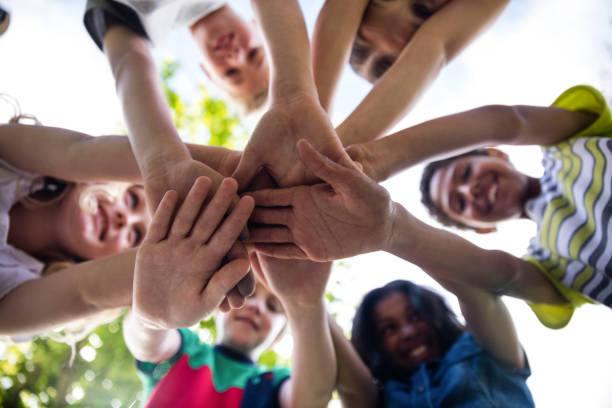
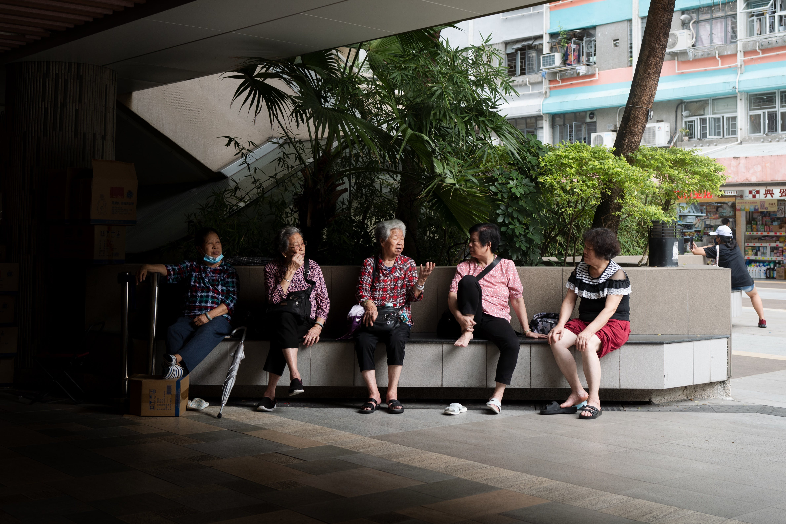

What We Do!
INITIATIVES
Shield Inc. encompasses a comprehensive approach aimed at preventing, addressing, and combating the sexual exploitation of children. This involves educational campaigns to raise awareness about the signs of abuse and the importance of reporting, legislative advocacy to strengthen laws and policies, support services for victims and their families, prevention programs to reduce the risk of abuse, collaboration with law enforcement for investigations and accountability, awareness-raising events, research and data collection to inform strategies, promotion of online safety, support for mandatory reporting laws, and community engagement to foster a culture of vigilance and support. These efforts collectively strive to protect children from harm and create a safer environment for their well-being.
INVOLVEMENTS
- Monthly Charity in the local communities
- Providing Seminars to different communities
- Educating Children at local schools
- Supporting families that has been affected by pedophilia
- Giving back to the community
- Giving awareness worldwide
Activities and Participation
Shield involves in organizing educational workshops and seminars aimed at informing parents, caregivers, educators, and community members about the signs of pedophilia, its impact on children, and strategies for prevention and intervention. Additionally, age-appropriate educational programs is be developed for implementation in schools to teach children about body safety, boundaries, and how to recognize and report inappropriate behavior. Our team also uses social media platforms, websites, and online resources to disseminate information, share survivor stories, debunk myths, and provide resources for support and reporting. Awareness events such as conferences, panel discussions, and community forums facilitate open conversations about pedophilia, its prevalence, and ways to combat it. Shield is constantly Collaborating with media outlets to produce public service announcements, articles, documentaries, and other media content so that we can further spread the word. Training sessions are also provided for professionals to enhance their ability to identify signs of abuse and respond effectively. Community outreach are frequent activities that Shield conducts which include distributing informational materials, hosting information booths at events, and conducting door-to-door campaigns to reach a wide audience. Collaborating with other advocacy organizations and support groups, advocating for policy changes, and empowering survivors to share their stories and advocate for change are integral components of the campaign. Together, these activities contribute to a comprehensive advocacy campaign aimed at educating the public, raising awareness, and mobilizing action to prevent and address pedophilia and its devastating impacts.
About Us
Who We Are

Vision
Mission

How to Help?
Donate Money
Spreading the Word
Support our Vision